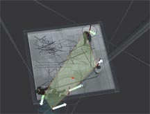

|  |
 |
 |
Blick
ins Congresszentrum des Multimediaforums in der Messe Köln.
Im Vorraum ist eine Kamera installiert, welche Besucher aufnimmt. Sie
können sich auf einer Videowand sehen, Töne erzeugen und mit
den Geometrien spielen, die ihre Bewegungen interpretieren. Pfeile geben
die Gehrichtung an, der Durchmesser der Kreise wächst mit der Gehgeschwindigkeit,
das hellgrüne Polygon umfaßt Personengruppen, das türkisfarbene
Polygon beschreibt den Zwischenraum zwischen zwei Personen, die "Bleistiftlinien"
zeichnen die Wege der letzten Minuten.